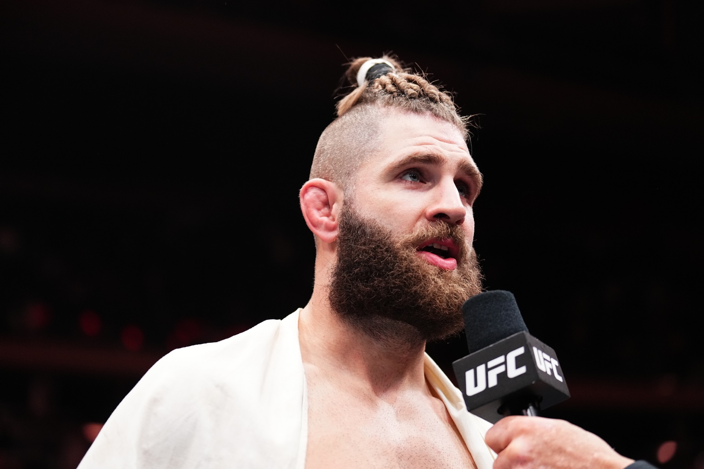
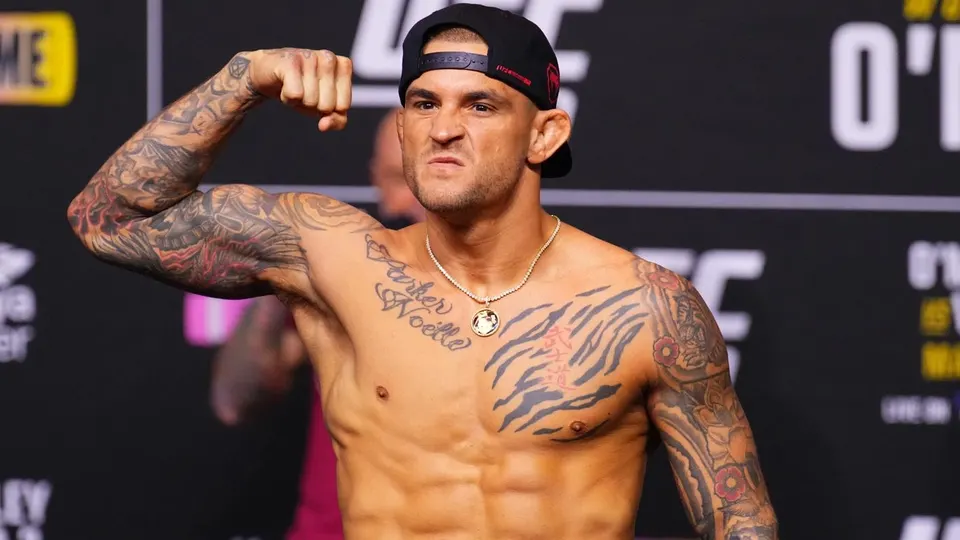
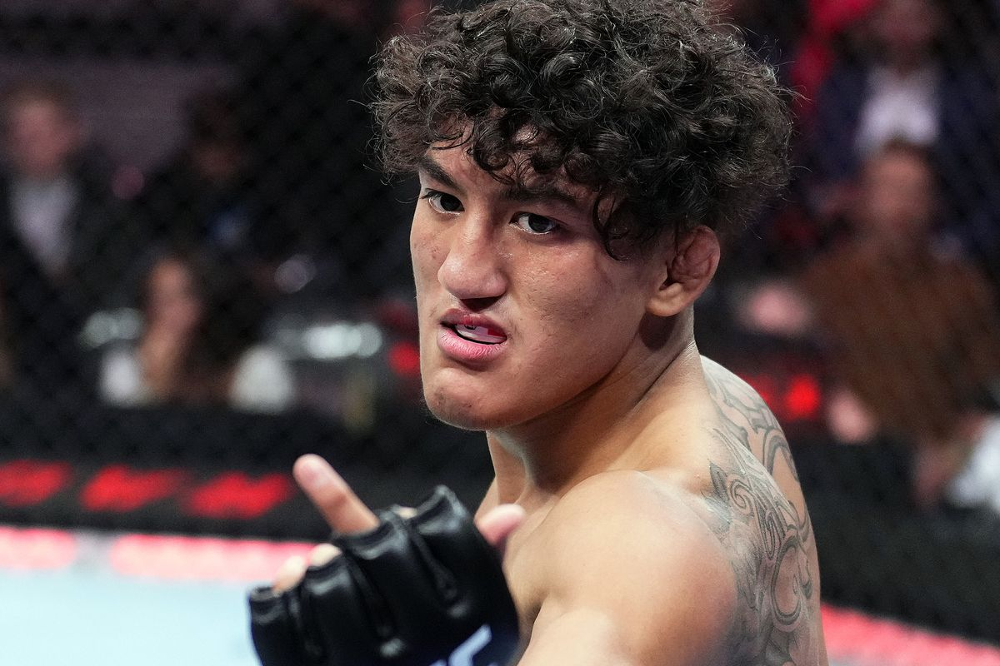
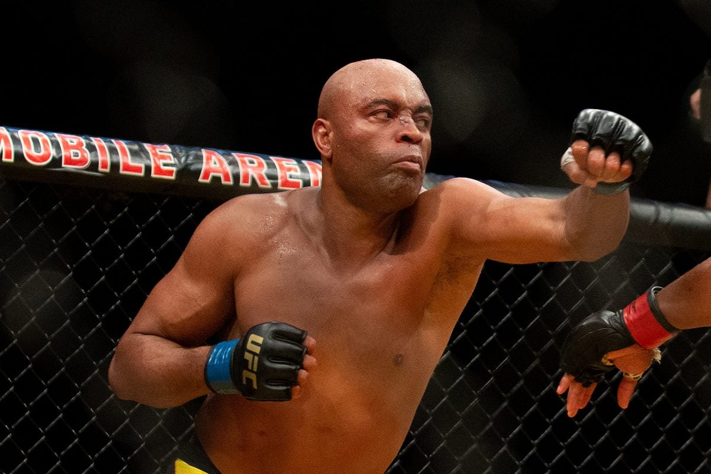
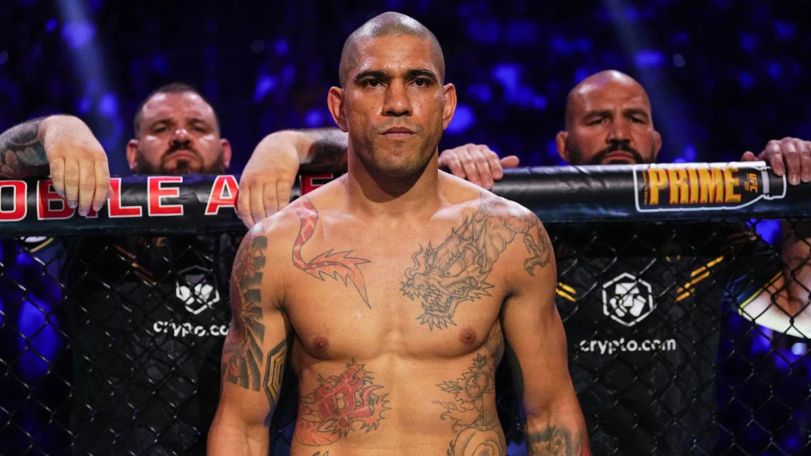
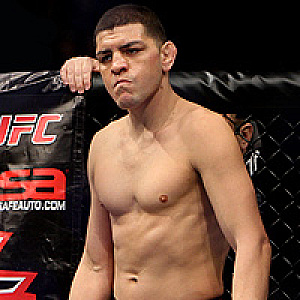

-
Jiří "BJP" Prochazka
Descrição
Jiří Procházka, apelidado de "BJP", é um lutador profissional de MMA tcheco. Atualmente, ele compete na divisão dos Meio-Pesados no Ultimate Fighting Championship (UFC).
Procházka é conhecido por seu estilo agressivo e explosivo, utilizando golpes poderosos e técnicas de submissão dinâmicas. -
Dustin "The Diamont" Poirier
Descrição
Dustin Poirier, conhecido como "O Diamante", é um lutador americano de artes marciais mistas (MMA) que compete na categoria peso-leve do Ultimate Fighting Championship (UFC).
Dustin Poirier é conhecido como um lutador completo, com um estilo de jogo versátil e equilibrado. -
Raul "El Niño Problema" Rosas Jr.
Descrição
Raul "El Niño Problema" Rosas Jr. é um lutador de MMA mexicano que atualmente compete na divisão dos pesos galo do UFC.
Rosas Jr. é conhecido por seu estilo de luta agressivo e versátil, combinando elementos de boxe, Muay Thai e jiu-jitsu brasileiro. Ele possui um excelente ground game. -
Anderson "Spider" Silva
Descrição
Anderson da Silva, mais conhecido como "Spider" ou "Aranha", é um ex-lutador brasileiro de MMA e ex-campeão peso-médio do UFC. Ele é considerado um dos maiores lutadores de MMA da história
Silva é conhecido por seu estilo de luta único, que combina elementos de vários estilos de artes marciais, como: Muay Thai, jiu-jitsu brasileiro, boxe e capoeira. -
Alex "Poatan" Pereira
Descrição
Alex Sandro Silva Pereira, mais conhecido como Alex Poatan, é um lutador brasileiro de artes marciais mistas (MMA) e ex-campeão de kickboxing. Atualmente defende o cinturão dos pesos-pesados.
Poatan é conhecido por seu estilo de luta agressivo e preciso, combinando golpes potentes de Muay Thai com um excelente jogo de grappling. Sua pegada forte e chutes devastadores o tornam um oponente formidável, capaz de nocautear seus adversários com um único golpe. -
Nick Diaz
Descrição
Nick Diaz é um lutador americano de MMA amplamente reconhecido por seu estilo agressivo e implacável dentro do octógono.
O estilo de luta de Nick Diaz é caracterizado por uma combinação devastadora de boxe e jiu-jitsu brasileiro. Seu boxe é conhecido por sua precisão e volume de socos, enquanto seu jiu-jitsu é impecável, com diversas finalizações no currículo.